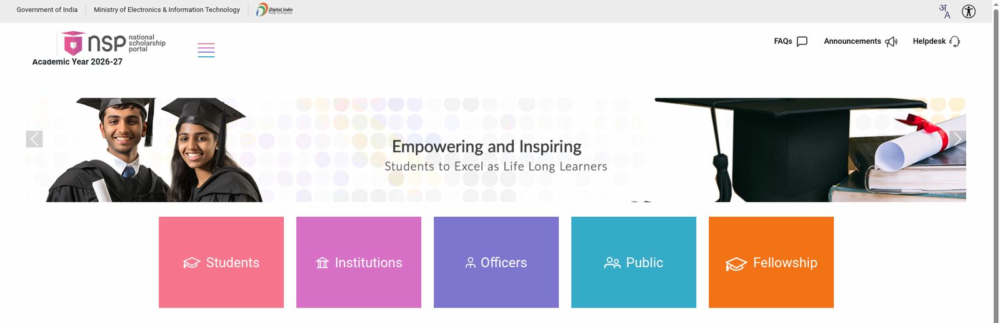
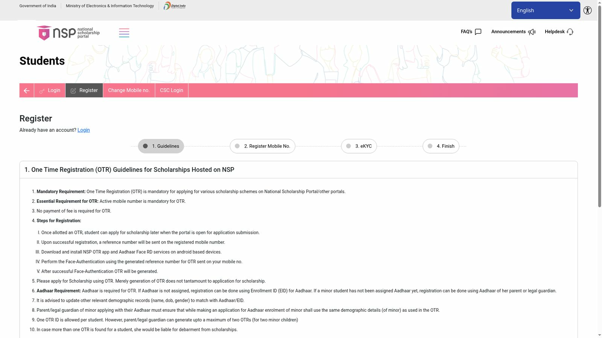

PM-USP CSSS scholarship: who gets Rs 12,000 a year and how to renew
PM-USP CSSS is a central merit-cum-means scholarship for college and university students. Fresh and renewal deadlines must be read separately. Checked 18 November 2026: NSP explicitly announces 30 November 2026 for fresh applications, while its renewal announcement still lists 31 October 2026. The broader scheme list and a Kerala notice show 30 November, so renewal availability remains unresolved. Do not assume the fresh extension applies to renewal.
Official publisher logo hosted by its publisher. Official source. Independent guide, not affiliated or sponsored. Artwork and trademarks belong to their owners.
What is it?
The PM-USP Central Sector Scheme of Scholarship for College and University Students (CSSS) is a merit-cum-means scholarship of the Department of Higher Education. You apply on the National Scholarship Portal (NSP), scholarships.gov.in.
Who can get it? (fresh applicants)
From the official guidelines and FAQ:
- You are above the 80th percentile of successful candidates in your stream from your Class 12 board.
- You study a regular degree course. Correspondence or distance mode is not allowed.
- Your college is recognised by AICTE or the regulator for your course.
- Family income is up to Rs 4.5 lakh a year. An income certificate is needed only for fresh applicants.
- The CSSS guidelines and FAQ say no other scholarship, fee waiver or reimbursement. NSP separately announces merit plus welfare combinations subject to scheme eligibility; do not assume that portal-wide statement overrides CSSS-specific restrictions.
80th percentile is not 80% marks. The central guideline requires above the 80th percentile among successful candidates in the relevant Class XII stream and board. Kerala's 18 November notice instead says above 80% marks for 2026 Kerala Higher Secondary/Vocational Higher Secondary pass-outs in first-year regular courses, and mentions age 18-25. Do not treat its percentage wording as equivalent to the central percentile rule or infer individual eligibility from that notice alone. Confirm your board cutoff and applicable batch rules on NSP.
How much?
From the guidelines: Rs 12,000 a year at graduation level for the first three years, and Rs 20,000 a year at post-graduation level. For technical courses such as B.Tech, the scholarship is up to graduation level only: Rs 12,000 a year for the first three years, and Rs 20,000 in the fourth year.
Renewal rules
To renew in each year of study you need at least 50 percent marks in the annual exam. The official guidelines and FAQ set attendance of at least 75 percent.
Fresh applications: 30 November; renewal extension not confirmed
NSP announcements: the fresh-application notice gives 30 November 2026. A separate renewal notice still gives 31 October for students, 15 November for institute verification and 30 November for L2 verification. Those first two dates have passed; its wording that renewal is open does not establish current access. The All Scholarships listing shows 30 November, 15 December and 31 December but does not resolve the fresh/renewal distinction in the public text we could read. Kerala's notice, updated 18 November, mentions fresh/renewal and 30 November. These sources conflict for renewal. We cannot confirm a renewal extension or current submission access. Check your own NSP renewal dashboard and obtain scheme-authority clarification. Verification dates are not student-submission deadlines. No personal account was accessed.
How to apply on NSP: step by step
Checked on the live National Scholarship Portal on 19 October 2026. NSP now uses One Time Registration (OTR) - do this first if you have never registered.
- Open scholarships.gov.in (Academic Year 2026-27 is live), click Students → Apply now, then Register. Registration is free - no fee is required.
- Read the OTR guidelines, tick the consent boxes and click Next. Register your active mobile number and verify it with the OTP; a reference number is sent to your mobile.
- Complete eKYC: install the NSP OTR app and the Aadhaar Face RD app on an Android phone and do face authentication with the reference number. Your OTR ID is then generated. Aadhaar is required; a minor without Aadhaar can register with a parent's or legal guardian's Aadhaar.
- Log in on NSP with your OTR ID, open the Renewal application for Academic Year 2026-27 and choose the PM-USP Central Sector Scheme of Scholarship (CSSS). (Fresh applicants choose Fresh Application instead.)
- Fill the application form and upload the documents it lists.
- Fresh applicants: submit before 30 November 2026 under the current fresh announcement. Renewal applicants: do not rely on that date; the renewal-specific public notice still lists 31 October. Check whether your own renewal dashboard permits submission and ask the scheme authority about the conflicting notices. Track submitted applications separately from institute and nodal verification.


Steps 4-6 happen inside your own NSP login, so they are not shown as screenshots. Generating an OTR alone is not an application - you must still log in and submit the scholarship application.
Video guides
We searched YouTube on 19 October 2026 for a step-by-step application video for this scheme on the current NSP OTR portal in English and in Malayalam. The videos we found cover older portal versions or could not be verified to match the current portal, so we are not linking any rather than risk outdated or unrelated instructions.
Cost, eligibility and limits
| Cost to apply | Free. |
|---|---|
| Rate | Rs 12,000 a year (graduation), Rs 20,000 a year (post-graduation), per the guidelines. |
| Who | Class 12 toppers above the 80th percentile, family income up to Rs 4.5 lakh. |
| Limits | Scholarships are allotted to state boards by quota. Not every eligible student gets one. |
Stay safe
- Apply only on scholarships.gov.in.
- Never pay an agent.
Frequently asked questions
What is the income limit?
Rs 4.5 lakh a year, from the guidelines.
How much is the scholarship?
Rs 12,000 a year at graduation level and Rs 20,000 at post-graduation level.
What is the renewal deadline?
A renewal extension is not confirmed. Checked 18 November 2026: the renewal-specific NSP announcement still lists 31 October, while the fresh announcement gives 30 November. The scheme list and Kerala notice show 30 November, creating an unresolved renewal conflict. Do not transfer the fresh deadline to renewal; check your dashboard and scheme authority.
Can I get it with another scholarship?
The checked CSSS guidelines prohibit another scholarship or fee reimbursement. NSP also has a broader merit/welfare announcement subject to scheme eligibility. Resolve any proposed combination with the scheme authority before relying on it.
I study B.Tech. What do I get?
Rs 12,000 a year for the first three years and Rs 20,000 in the fourth year.
Sources: National Scholarship Portal, NSP All Scholarships (dates), CSSS guidelines, CSSS FAQ. Checked 6 October 2026; application steps and video search re-checked 19 October 2026.
18 November correction sources: NSP full announcements, NSP Students, Kerala notice, updated 18 November.